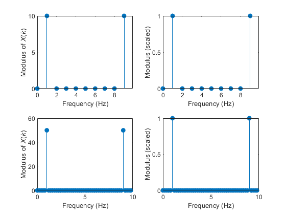

clear all
A = 2;
p = 1;
Tp = 1 / p;
fs = 10 / Tp;
T1 = 1 * Tp;
T2 = 5 * Tp;
t1 = [0:1/fs:T1-1/fs];
t2 = [0:1/fs:T2-1/fs];
x1 = A * cos(2 * pi * p * t1);
x2 = A * cos(2 * pi * p * t2);
X1 = fft(x1);
X2 = fft(x2);
N1 = length(x1);
N2 = length(x2);
f1 = fs * (0:N1-1) / N1;
f2 = fs * (0:N2-1) / N2;
subplot(2,2,1);
stem(f1, abs(X1), 'fill')
xlabel('Frequency (Hz)')
ylabel('Modulus of \itX\rm(\itk\rm)')
axis([0 9.9 0 10])
subplot(2,2,2);
stem(f1, abs(X1) / fs / T1, 'fill')
xlabel('Frequency (Hz)')
ylabel('Modulus (scaled)')
axis([0 9.9 0 1])
subplot(2,2,3);
stem(f2, abs(X2), 'fill')
xlabel('Frequency (Hz)')
ylabel('Modulus of \itX\rm(\itk\rm)')
subplot(2,2,4);
stem(f2, abs(X2) / fs / T2, 'fill')
xlabel('Frequency (Hz)')
ylabel('Modulus (scaled)')
